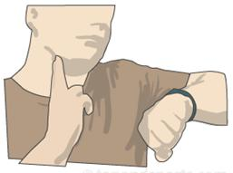

19: Heart rate
Measuring your own heart rate.
There are a number of places on your body where you can feel your own pulse. A good place to start looking for it would be your neck, where you probably will be able to find the pulse of the so called carotid artery just below your chin (see the drawing below).

- Sit down and relax your muscles. Place two fingers of one hand just below your chin and try to find your pulse. Hold a stopwatch in your other hand. Once you have found your pulse, start the stopwatch and count the number of heartbeats for one minute.
- Ask two of your fellow students to measure your heart rate as well.
- Calculate the average of these three measurements. This value will be a reasonably good estimate of your heart rate.
- This value will be used for your Health Passport.
What to do next: After you complete this activity, please proceed with the "Health Passport" activity.